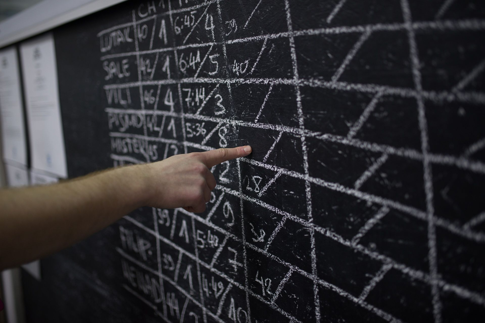
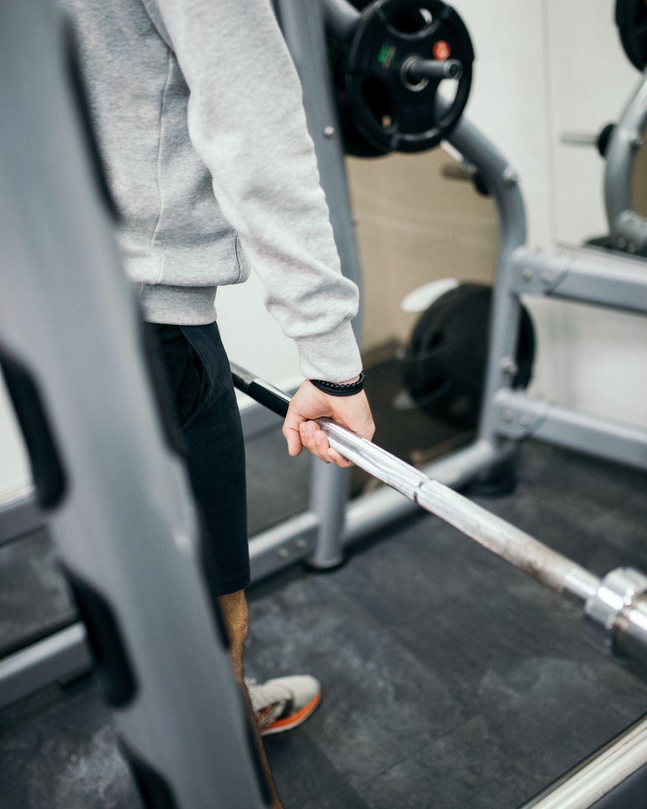
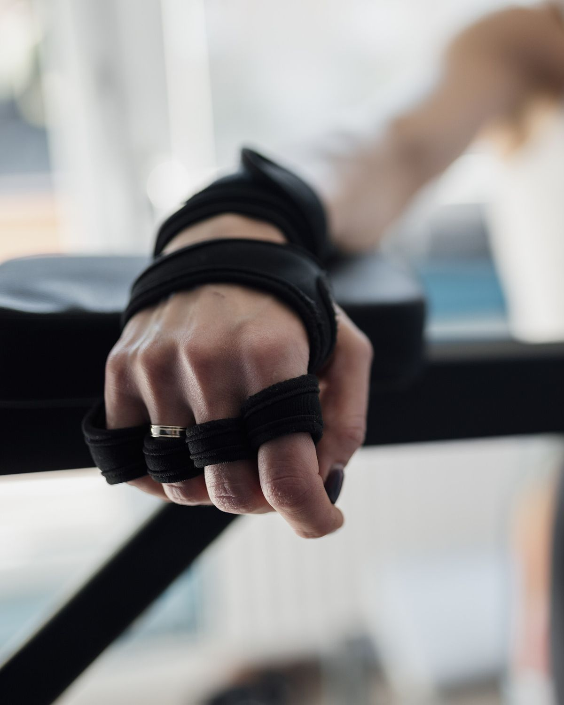
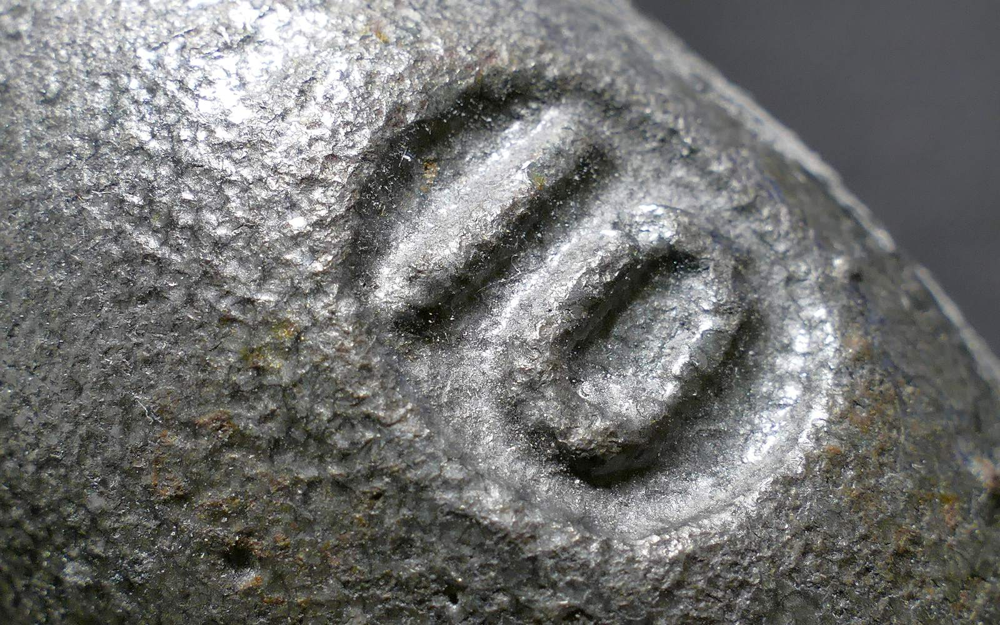
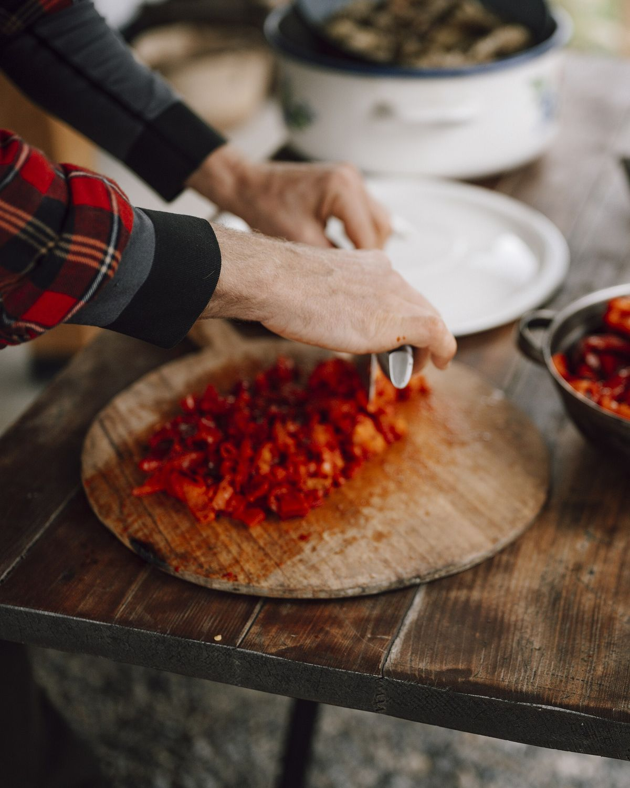

Trening z planem, nie z przypadku.
Spotkania 1:1 na sali albo online. Każdy tydzień rozpisany, a każde ćwiczenie ma swój powód.
- Pierwsza rozmowa trwa 30 minut
- Plan na 4 tygodnie
Sala, online albo plan na 4 tygodnie
Trzy sposoby pracy. Każdy zaczyna się od tej samej rozmowy.
-
Spotkania 1:1
od 160 zł
Godzina na sali, ze mną obok. Technika, ciężar i tempo ustawiane na bieżąco.
-
Prowadzenie online
od 290 zł / mies.
Plan w aplikacji, nagrania ćwiczeń i cotygodniowa rozmowa o tym, co poszło, a co nie.
-
Plan na 4 tygodnie
od 220 zł
Jednorazowo rozpisany blok ćwiczeń z opisem każdego ruchu. Ćwiczysz sam albo sama.

Plan, który powstaje po rozmowie
Zaczynamy od rozmowy i prostego sprawdzenia, jak się ruszasz. Dopiero potem powstaje plan.
Rozpisuję kolejne tygodnie: konkretne ćwiczenia, ciężary i przerwy. Po każdym bloku siadamy do wyników i razem decydujemy, co zostaje, a co zmieniamy. Bez zgadywania i bez programu z szuflady.
- Pierwsza rozmowaCel, dotychczasowy ruch, czas w tygodniu.
- PlanRozpisany na 4 tygodnie, z opisem każdego ćwiczenia.
- PodsumowaniePo każdym bloku: wyniki, wnioski, następny krok.


Zasada
Ciężar dobieramy do dnia, który masz, a nie do tego z planu.
Przykładowe opinie
Opinie po pierwszych tygodniach
-
Pierwszy raz wiem, po co robię każde ćwiczenie. Plan wisi na lodówce i naprawdę go trzymam.
Marta K., prowadzenie online -
Po miesiącu podnoszę więcej, a plecy przestały dawać o sobie znać po pracy.
Tomasz W., spotkania 1:1 -
Spokojne tempo i konkretne uwagi. Żadnego krzyczenia, za to dużo sensu.
Ola P., plan na 4 tygodnie
Umów pierwszą rozmowę
Napisz kilka zdań o sobie i o tym, ile czasu masz w tygodniu. Odpiszę w ciągu dwóch dni roboczych.
Wolisz pocztę? Napisz e-mail
